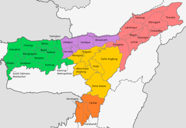

Geographic reference
Every place, in context.
Explore Assam's 35 district boundaries, then turn on the village layer to see the communities within them.
Explore the map
Assam, IndiaFind a place
Browse districts, choose a boundary, or load the complete Assam village layer. Village boundaries are kept optional for a faster first map load.
35district features
21,032optional village features